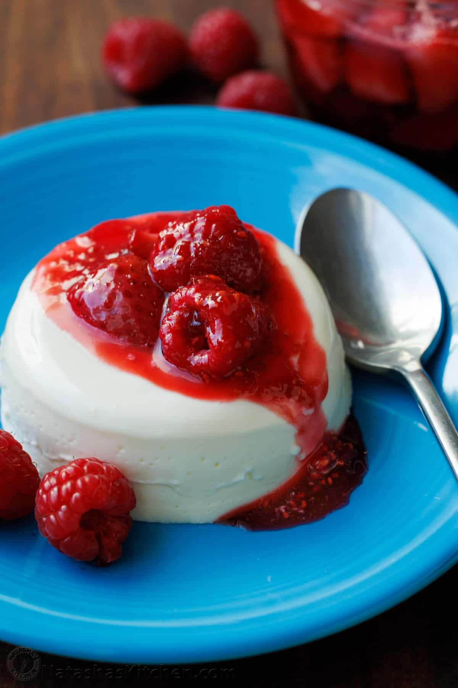

Panna Cotta

Description
Panna Cotta is an Italian dessert that looks and tastes fancy but is so quick and easy to make!
The fresh berry sauce gives every creamy spoonful the perfect balance of sweet and tangy.
Ingredients
Ingredients for Panna Cotta:
- 1 cup whole milk
- 1 1/2 tsp unflavored gelatin
- 2 cups heavy whipping cream
- 1/2 cup + 1 Tbsp granulated sugar
- pinch salt
- 1 tsp vanilla extract
- 1 cup sour cream
Ingredients for Berry Sauce:
- 2 cups berries, divided (1 cup raspberries and 1 cup quartered strawberries)
- 1/4 cup granulated sugar
- 1/2 Tbsp lemon juice
Instructions
How to make Panna Cotta:
- Off the heat, place 1 cup milk in a medium saucepan and sprinkle the top with 1
packet gelatin. Let stand 3-5 min or until gelatin is softened. Place pan over
medium/low heat and stir until gelatin dissolves and mixture is steaming, about 4-5 min.
- Add 2 cups heavy whipping cream, 1/2 cup + 1 Tbsp sugar, 1 tsp vanilla, and a pinch of salt.
Continue stirring for about 5 min until the sugar is fully dissolved and the mixture
is steaming. Remove from heat and let cool for 5 minutes.
- Place sour cream in a medium bowl with a pouring lip. Whisking constantly, gradually
add warm cream. Once the mixture is completely smooth, strain through a fine mesh sieve
if desired, then quickly divide it into 6 glass cups or 8 ramekins. Refrigerate until fully set;
4 to 6 hours.
How to make Berry Sauce:
- In a small saucepan, combine 1 cup berries, 1/2 Tbsp lemon juice, and 1/4 cup sugar.
Bring to a low boil and cook for 4-5 min or until syrupy.
- Stir in remaining 1 cup of fresh berries and remove from heat. When the
syrup is at room temp or just barely warm, spoon it over the top of chilled panna cottas.
Source